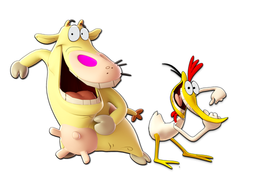

Ruokailutottumukseni
Kasvaaksesi koolta sinun täytyy olla kalorisessa ylijäämässä – toisin sanoen, sinun täytyy syödä enemmän kuin kulutat. Jos tavoitteesi on kasvattaa lihasmassaa, on tärkeää noudattaa tasapainoista ruokavaliota, joka sisältää hiilihydraatteja, proteiinia, rasvoja ja kuituja.Proteiini on tärkein makroravintoaine lihasten kasvulle. Se toimii lihaskudoksen rakennusaineena. Hyviä proteiinin lähteitä ovat esimerkiksi kana, naudanliha, kala, kananmunat, maitotuotteet, palkokasvit, pähkinät ja siemenet.
Hiilihydraatit ovat kehon ensisijainen energianlähde, ja ne auttavat jaksamaan liikunnassa sekä palautumaan. Hiilihydraatteja saat esimerkiksi riisistä, pastasta, leivästä, perunoista, hedelmistä ja vihanneksista.
Rasvat ovat välttämättömiä hormonituotannolle ja yleiselle terveydelle. Terveellisiä rasvanlähteitä ovat muun muassa avokadot, pähkinät, siemenet, oliiviöljy, kookosöljy ja rasvainen kala.
Kuidut ovat tärkeitä ruoansulatukselle ja yleiselle hyvinvoinnille. Kuitua saat runsaasti hedelmistä, vihanneksista, täysjyväviljoista, pähkinöistä ja siemenistä.